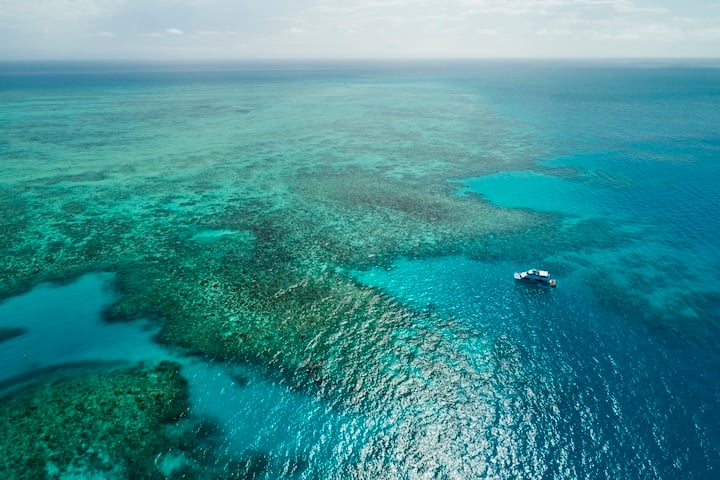

Kejaiban Alam: Great Barrier Reef
Great Barrier Reef adalah terumbu karang yang Membentang sepanjang 2.300km di sepanjang pesisir pantai Australia, Great Barrier Reef menawarkan wisata pesisir yang berlimpah yang berbeda dari di mana pun di dunia.

Berenang di antara formasi koral, kerang raksasa, beberapa spesies langka paus, dan enam dari tujuh spesies penyu laut. Belum lagi lebih dari 1.600 spesies ikan yang menjadikan keajaiban dunia air ini rumah.